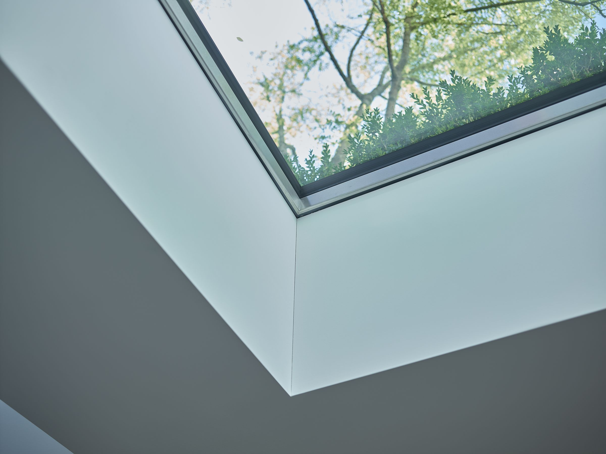
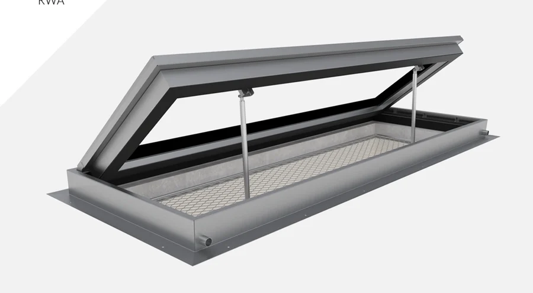

AIRFLOW a RWA: pochozí světlík, který větrá.
Světlo shora lze doplnit o čerstvý vzduch nebo o odvod kouře a tepla při požáru. Dvě varianty, které vycházejí z řad chrome a pure.

AIRFLOW
Patentovaná varianta, která kromě světla přivádí do místnosti i čerstvý vzduch. Zasklení zůstává pevné, větrá se vodorovně vloženými klapkami s dálkovým ovládáním. Konstrukce je řešená tak, aby při větrání nezatékalo.
- Využití: trvalé větrání a noční ochlazování prostoru pod terasou
- Provedení: jednostranné nebo oboustranné větrání
- Doplňky: izolační trojsklo, vyhřívané sklo, protisluneční sklo, LED osvětlení, síť proti hmyzu, bezpečnostní provedení

RWA
Podle výrobce první vodorovně otevíravý pochozí světlík svého druhu. Zasklení se otevře až o 60 stupňů a slouží k odvodu kouře a tepla při požáru. V běžném provozu se používá k větrání a nočnímu ochlazování.
- Otevření: až 60 stupňů, pro odvod kouře a tepla
- Rámy: chrome i pure
- Doplňky: izolační trojsklo, vyhřívané sklo, protiskluz, LED, PRIVA-LITE, bezpečnostní a poplachové sklo
Co lidé u větrání zjišťují.
Co je GLASSFLOOR AIRFLOW?
Patentovaná varianta, která kromě světla přivádí do místnosti i čerstvý vzduch. Zasklení zůstává pevné a větrá se vodorovně vloženými klapkami s dálkovým ovládáním, konstrukce je řešená tak, aby při větrání nezatékalo.
K čemu slouží AIRFLOW?
K trvalému větrání a nočnímu ochlazování prostoru pod terasou. Větrat lze jednostranně nebo oboustranně.
Co je GLASSFLOOR RWA?
Podle výrobce první vodorovně otevíravý pochozí světlík svého druhu. Zasklení se otevře až o 60 stupňů a slouží k odvodu kouře a tepla při požáru, v běžném provozu k větrání a nočnímu ochlazování.
V jakých rámech se RWA vyrábí?
V řadách chrome i pure.
Má pod světlíkem proudit vzduch?
Napište nám, jaký prostor je pod terasou. Doporučíme, zda se hodí AIRFLOW, RWA, nebo pevné zasklení.
Údaje o rozměrech, doplňcích a požární odolnosti vycházejí z podkladů výrobce Heliobus AG platných k 1. 9. 2026. Závazné jsou vždy podklady ke konkrétní zakázce.